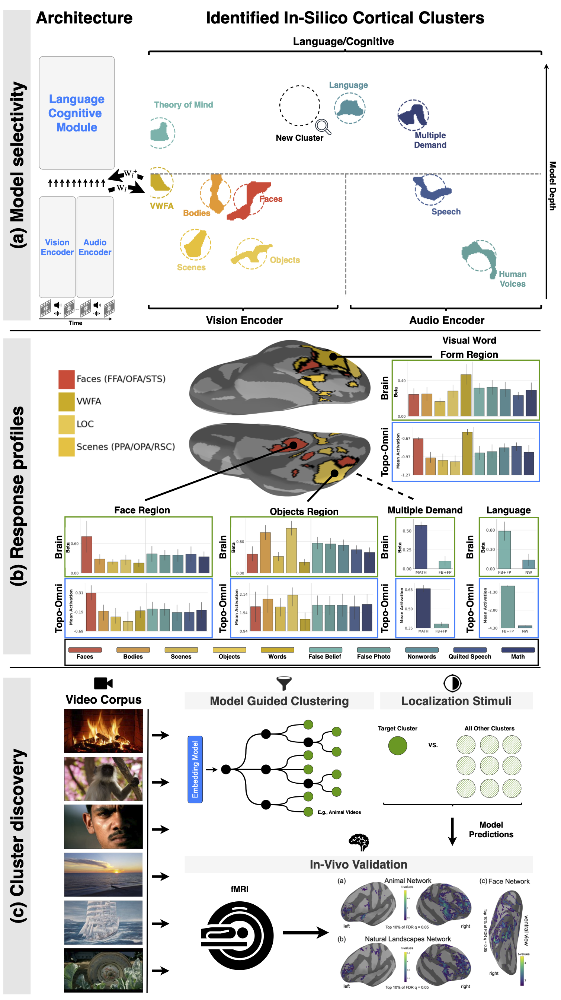

01
A single sheet for vision, audition & cognition
Topo-Omni projects the vision encoder, audio encoder, and language/cognitive module of Qwen2.5-Omni onto one shared in-silico cortical sheet. A spatial-smoothness loss, applied jointly with the model's self-distillation task loss during fine-tuning, encourages nearby units to develop similar response profiles — with no neural data or category labels supplied during training. The result is brain-like clustering that spans sensory and cognitive systems within a single contiguous map, from category-selective patches (b) to model-guided discovery of new networks validated in human fMRI (c).